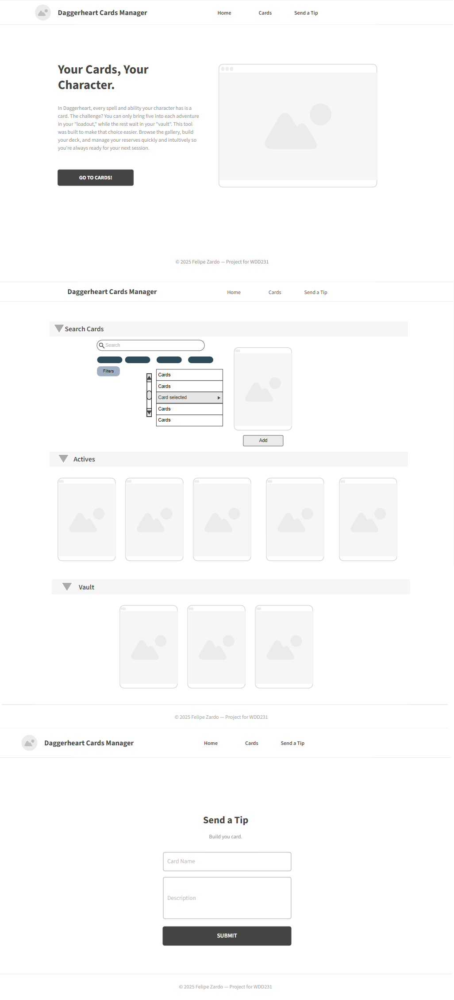
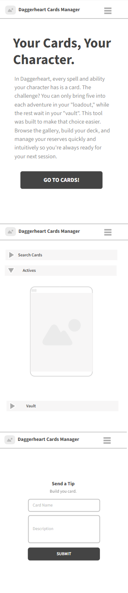

Site Name
Daggerheart RPG Cards Manager
The site helps players organize and interact with cards used in Daggerheart RPG sessions.
Purpose
This website provides tools for RPG players to search, filter, select, and manage ability cards. It functions as a personal reference tool during character creation and gameplay.
Audience
Players of the Daggerheart tabletop RPG, both beginners and veterans, who want to manage cards digitally in a simple interface.
Scenarios
- How can I quickly find and view the details of a specific ability card?
- Which cards are active on my character? Can I archive unused ones?
- Is there a way to organize cards by category or domain?
Color Scheme
The design uses a modern, dark-themed palette inspired by RPG visuals.
- Primary background: #0E1117
- Surface color: #161B22
- Accent color: #58A6FF (hover: #1F6FEB)
- Text colors: Primary: #F0F6FC | Secondary: #8B949E
Typography
The site uses the Yrsa serif font from Google Fonts for readability and elegance.
Wireframe
The site will consist of three main pages:
- index.html — A homepage introducing the site and its purpose
- cards.html — The core page with card browsing, filtering, and management
- tips.html — A form page for users to submit custom card requests
Planned interface components include:
- Card Gallery with dynamic search and filters
- Active Deck Panel
- Vault Panel (for archived cards)
- Custom Card Request Form
Below are the wireframes for both desktop and mobile versions:

